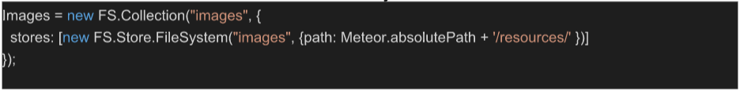

Design
System Architecture
Our system includes 3 major components. A server, running the code and connected to MeteorDB database, and an ethereum node (in our case testRPC) where our smart contract resides. The server uses web3.js, an ethereum Javascript API, to interact with the smart contract. The smart contract itself is compiled and deployed by a framework called Truffle.
Database structure

Our database is a non-relational NoSQL database, mongoDB, which holds three main collections:
- Users (holds information about users)
- documentsdb (holds information about documents)
- toSign (holds information about signature requests and made signatures)
- accounts holds the number of the associated ethereum wallet. At this moment, it is an integer which refers to the number of the account in testRPC. When our app moves to a true ethereum network, this field would be replaced by two others: the wallets’ public key and private key, so that our authentication system (username and password) would constitute an abstraction for this
- power of sign is a flag which says whether a party has the ability to sign documents or not. Setting this flag to 1 can only be done manually by the admin, once the account is verified. For example, if UCL wants to create an account to sign statements of student status, it would need to contact the admin. Only then it is recognised as a body who can sign documents, and it would appear in the list of institutions.
- When a document is uploaded to our website, it is saved in the server’s local filesystem. An id is prepended to the name with which it is saved, and this id is savedin the id field as well. (The _id field, however, is the entries’ id).
- The username field is mainly used to display a user’s document by filtering the documentsdb database
- An entry is created in this database whenever a user requests of a party’s signature. This party is referenced to by the institution field, and multiple requests would generate multiple entries. The id of the document to be signed is in the document_id field.
- Not having a reference to the design requester is a design decision. In fact, the signature on a document should solely depend in its content (in the pdf). Hence, if two people own two copies of the same document, and one of them is authentic then the other one is authentic as well.
- The signed field is first instantiated to 0, meaning the document has been requested to be signed. Once the party signs the document, the signature is done on the blockchain (in our smart contract), and the signed field becomes 1
- In accordance with mongoDB’s documentation advise about one to many relationships (one document might have multiple signature)[https://www.mongodb.com/blog/post/6-rules- of-thumb- for-mongodb- schema-design-part- 1], and instead of having arrays of signatures in documentsdb, we decided to create another collection: toSign. Each entry in this last database holds a reference of the document that is/should be signed.
- Instead of having two collections for normal users and institutions accounts’ respectively, we decided to have one collection with a flag entry to mark whether a user is an institution or not. This decision was made to be able to use Meteor’s very own authentication system
- After having signed in, the user selects their document
- The hash of the document is calculated (with web3.sha3(base64)), and an entry with this hash is added to the hashmap in the smart contract (thanks to web3). It maps the unique reference of the document to its owners’ id (the user logged in) and the institutions who signed on it (0 for now)
- An entry in the documentsdb collection is added, corresponding to the document uploaded
- The document is also added to the filesystem
- The hash of the document is calculated
- The flag in the corresponding signature request is set to 1 (which means the document has been signed)
- The signatory’s ethereum public key is added to the hashmap in the smart contract. In particular, the public key is added to the array of keys, “sign”, referenced to by the hashmap entry of the signed document.
Users
Example entry:
{"_id" : "NJjWHxSFNtvC9jHgm", "createdAt" : ISODate("2017-04- 01T17:11:02.806Z"), "services" : { "password" : { "bcrypt" : "$2a$10$nL8JgF0kQnogyIwIPKRTyeVPf/rKWcggG7Mepq9AWoXjcwCgByr/S" }, "resume" : { "loginTokens" : [ ] } }, "emails" : [ { "address" : "email@email.com", "verified" : false } ], "profile" : { "firstName" : "firstName", "lastName" : "lastName", "organization" : "ucl", "accounts" : 2, "powerofsign" : 1 } }
Notes:
Although the majority of the fields seem trivial, the role of two important fields should be highlighted:
documentsdb
Example entry:
{ "_id" : "hBEsyWTB3YzzP6YMr", "id" : "DvgpGbBQxSeMNTCv9", "createdAt" : ISODate("2017-04- 05T14:07:55.496Z"), "owner" : "NJjWHxSFNtvC9jHgm","username" : "email@email.com" }
Notes:
toSign
Example entry:
{ "_id" : "KssAfGG9vfQtkFaNh", "document_id" : "dGwdBeFEwfFKvNvQx","institution" : "Loubna", "signed" : 1 }
Notes:
Design decisions:
Smart contract
Our smart contract, written is solidity, mainly maintains a hashmap, which hashes a document reference to details about this document. The most important details about this document are: its owner and its signatories, both of them having the format of the public key of an ethereum wallet (ie their ethereum username). The document reference is its sha3 hash.
Web3.js
We used this tool to calculate the sha3 hash of a pdf document (*), and to trigger the smart contract lying in testRPC (referenced by its address and abi)
Link to the packageDesign Patterns
Because our project is quite unorthodox, as its main value lies in interacting with a smart contract from the front end, and making use of it without complex algorithmic computation or a multitude of classes that interact with each other, our use of design patterns doesn’t completely fit to their definition, as they were sometimes adapted to match our aims.
Iterator
The Iterator design pattern is used to access the elements of a collection of objects in sequential manner, and potentially access their attributes. This design pattern has been used in many occasions, including:
- Going through the documents of a person, whether to check who signed them or simply to display them
- Displaying the names of institutions who signed a document
Model-View-Controler
The Model – View – Controller (MVC) design pattern divides an application into three separate, but interconnected parts, just like its names says. Using meteor has, indirectly, led us to implementing?? this design with our app. Each page has a view (.html) code which defines its look, a controller (.js) code which accepts input and interactions and executes commands accordingly. The data logic, the model, uses the Meteor libraries.
Reference [https://en.wikipedia.org/wiki/Model–view–controller]
Adapter
This design pattern has been mainly used to solve the following problem. The function which calculates the hash of a document couldn’t be used both when the document is first uploaded or later. When the document is uploaded, its type is different from when we store it. Using different functions in different cases was impossible, as we wanted to get the same hash for the same document. Hence we needed to create an “adapter” so that the type of the pdf document always matches what the function expects.
Proxy
This concept behind this design pattern has been applied in our web app. Querying data from the Blockchain, as well as other operations we perform (calculating the hash of a document) are resource-hungry and expensive. That’s why we only perform these functions in crucial moments, such as when a person checks whether a document they have at hand is authentic or not. In other situations (a person checking their list of documents and the signatures of each), we perform cheap operations, namely querying our mongoDB database, which keeps a “proxy” of the data in the blockchain.
Null Object
We specifically used this design pattern because of different problems we faced. The modals we were using (when you press on an element in a table) were all getting the value of the first element in the table. Hence, we needed to set a default (“null”) value to the modals, and they get their value later on from a global variable which saves the last element of the table that was pressed.
Development tools
Version control
Github
File Storage
As said earlier, files are stored in the servers’ filesystem with their unique id prepended to their original name. We used the CollectionFS packages for Meteor to save the files in the filesystem, and to keep track of them, their id is saved in our documentsdb collection. The files are saved in the resources directory: 
Communication
To communicate in the development process, the team has mainly used a whatsapp group, a facebook group for sending and sharing documents for reference. A google drive directory is where all our files are kept.
UI Design
Sketches have been first used to design the website. Later, a tool called mobirise helped us in developing our first prototype.
IDE
The main IDEs we used are VisualStudioCode and Sublime, depending on the preference of the team members.
Implementation details of key functionalities
Uploading a document
Requesting a signature
An entry is added to the “toSign” collection, with a reference to the document, a reference to the user who should sign the document, and the flag 0